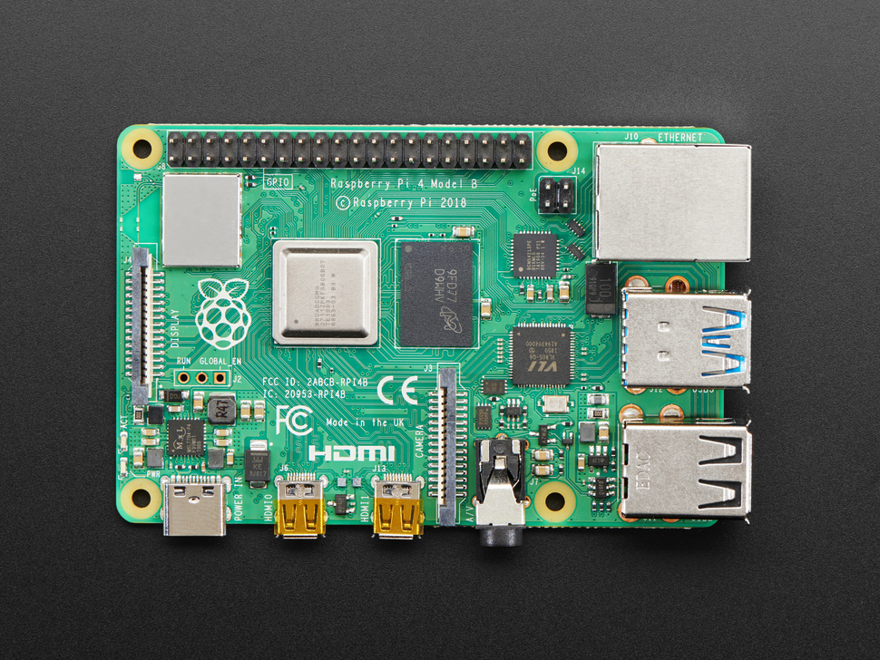
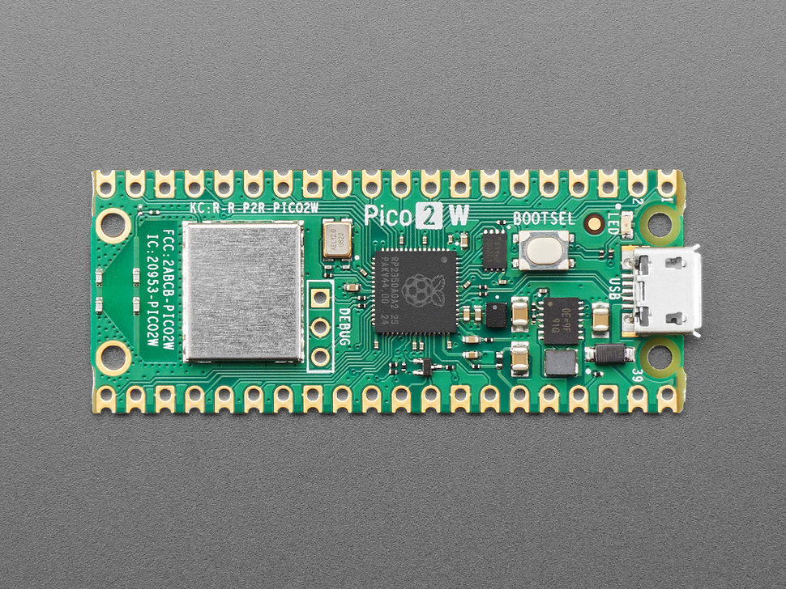
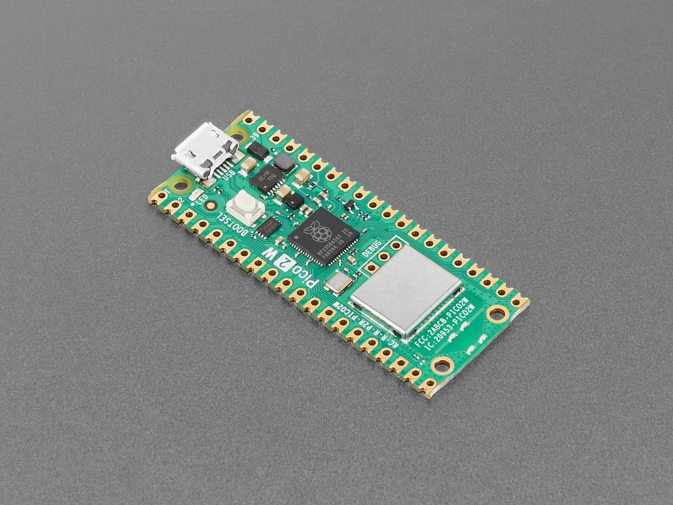
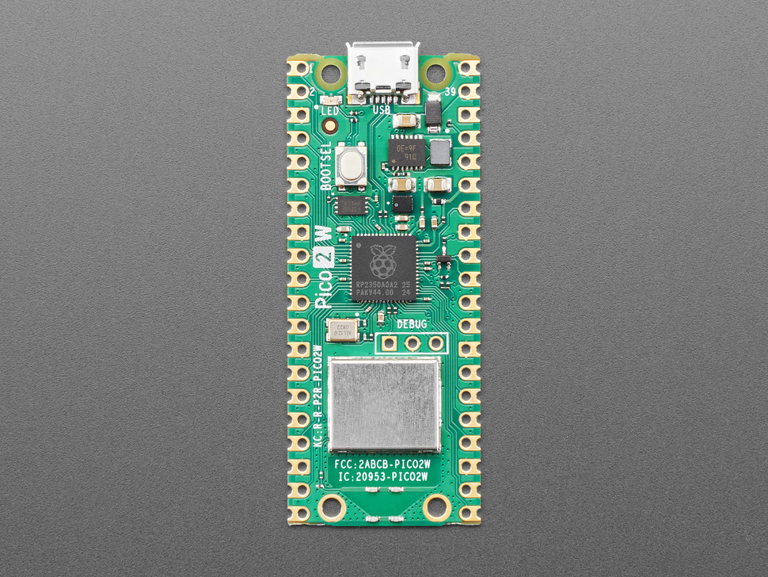
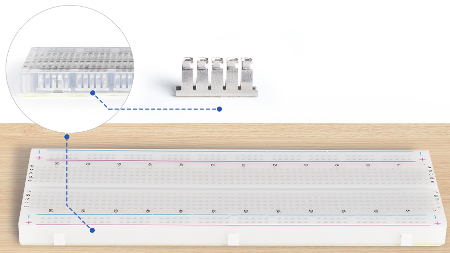
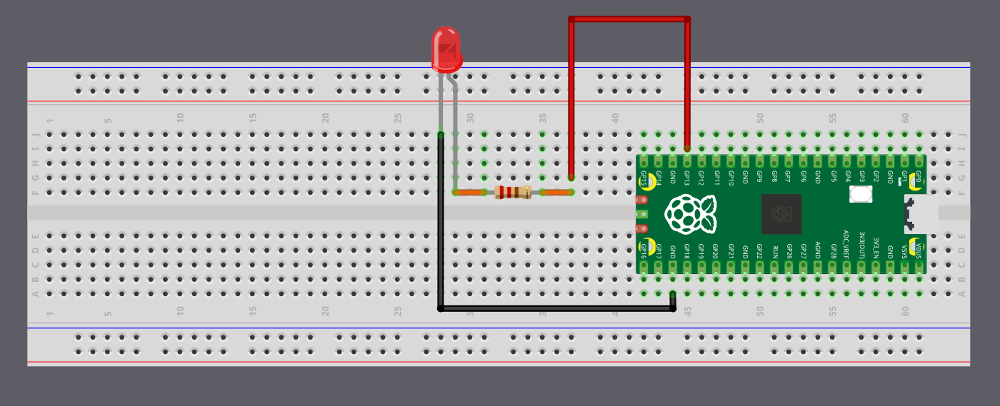

How to Make Mechanisms of Control, Session 1
Introduction to the Physical Pixel
Thinking Through Circuits
Learning Goals
By the end of today we:
- Understand what a microcontroller is and what makes Arduino useful
- Grasp the structure of an Arduino sketch (
setup()andloop()) - Learned the difference between digital and analog signals
- See how sensors and output connect through code
- Can begin to imagine interactive behaviours as part of artistic expression
What can Arduino do for art and design?
- Bridge between physical and digital worlds
- Enable works that react, move, listen, or shine
- Expand material practice with behavior and time
What Is Arduino?
Arduino = Ecosystem
- Hardware (boards, such as the Pi Pico 2W)
- Software (IDE)
- Open-source community
Key idea:
Input → Processing → Output
Part 1
The Mental Model: What is a Microcontroller?


Your laptop is a CEO
It is constantly distracted

The Pi Pico is a Monk
Wakes up, reads one script and does it to perfection
A microcontroller is a small "computer" that:
- Reads input (sensors)
- Processes logic (code)
- Controls output (actuators)

Pi Pico 2W Specs
- USB power + communication
- 24 Digital pins (0–23)
- 3 Analog pins (Pin 26-28)
- Onboard LED (
LED_BUILTIN) - Reset button
- Microcontroller chip
- Wi-Fi (2.4 GHz) & Bluetooth
- Power via USB or external power supply
- Connect to laptop → first time nothing happens
- But it's ready for communication
Part 2
The Tech Translation
The chain of command:
Intent -> IDE -> Board -> Reality

Arduino IDE
The Translator
void setup() {
pinMode(LED_BUILTIN, OUTPUT);
}
void loop() {
digitalWrite(LED_BUILTIN, HIGH);
delay(1000);
digitalWrite(LED_BUILTIN, LOW);
delay(1000);
}
Code Anatomy – Time & Rhythm
| Function | Purpose |
|---|---|
setup() |
Runs once at the beginning (waking up) |
loop() |
Repeats forever (Breathing) |
digitalWrite() |
Sets voltage HIGH or LOW |
delay() |
Pauses for a given time (milliseconds) |
The Board – Bridging Code and Physics


The Concept of a Circuit:
Electricity must flow in a circle.
void setup() {
pinMode(LED_BUILTIN, OUTPUT);
}
void loop() {
digitalWrite(LED_BUILTIN, HIGH);
delay(1000);
digitalWrite(LED_BUILTIN, LOW);
delay(1000);
}
Blinking an LED
Digital vs Analog
Digital
- Two states: HIGH / LOW
- Example: button pressed or not
Analog
- Continuous range of values
- Example: potentiometer or light sensor
| Signal Type | Range | Example |
|---|---|---|
| Digital | 0 or 1 | Button |
| Analog | 0–1023 | Potentiometer |
Mapping Input to Output
int ledPin = 15;
int potPin = 26;
void setup() {
pinMode(ledPin, OUTPUT);
}
void loop() {
int sensorValue = analogRead(potPin); // expect 0..1023
int delayTime = map(sensorValue, 0, 1023, 50, 1000); // 50..1000 ms
digitalWrite(ledPin, HIGH);
delay(delayTime);
digitalWrite(ledPin, LOW);
delay(delayTime);
}
Change LED blinking by physical input
Reflection
- What can we express with rhythm, timing, or response?
- How does behaviour become a design material?
- How could sound, light, or motion become part of a conversation between a human and an object?
“Arduino lets us think through materials — not just their form, but their behaviour.”
Summary: Core Concepts
| Concept | Description | Artistic Relevance |
|---|---|---|
| Microcontroller | Small computer on a board | Makes materials behave |
| Setup/Loop | Structure of temporal logic | Defines rhythm and flow |
| Digital/Analog | Binary vs continuous | Affects expressive resolution |
| Input/Output | Sense and respond | Enables interaction |
| Serial Monitor | Text bridge to computer | Data as creative material |
“In new media art, Arduino is not a tool for technology, it’s a medium for expression, behaviour, and time.”